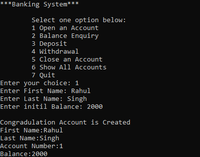
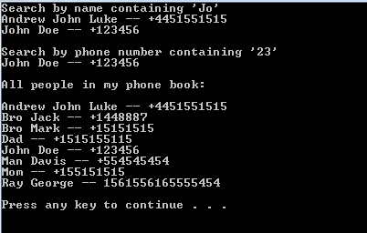

Simple Console Guess Game

Bank Management System (Console)

Address Book CLI App
Looking to sharpen your C++ skills? Here are some project ideas and real open-source GitHub repos you can dig into.